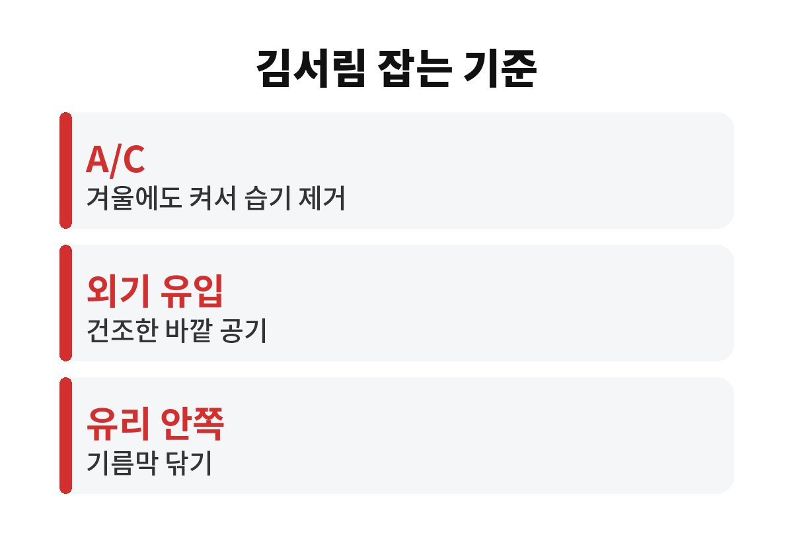
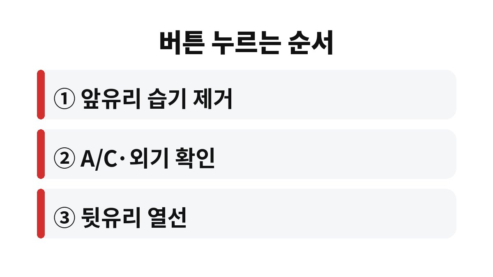

차 유리 김서림은 히터 바람만 세게 트는 것보다 에어컨(A/C)을 켜고 외기 유입으로 바꿔야 빨리 사라진다.
김은 차 안 습기가 차가운 유리에 닿아 맺힌 물방울이라, 온도를 올리기 전에 습기부터 빼야 한다.
젖은 우산과 패딩을 들고 넷이 차에 타면 출발하고 몇 분 안에 앞유리가 뿌옇게 변한다.
손으로 닦으면 잠깐 보이다가 줄무늬가 남고, 곧 다시 흐려진다.
앞유리보다 위험한 건 옆유리다.
사이드미러가 안 보이는 상태에서 차선을 바꾸게 된다.
김서림은 기온이 낮고 비나 눈이 오는 날, 사람이 많이 탄 날 가장 심하다.
혼자 타는 맑은 날엔 히터만으로도 금방 걷히니, 같은 방법이 늘 통하지 않는 이유가 여기에 있다.
차 유리 김서림을 줄이려면 그날 실내에 습기가 얼마나 들어왔는지부터 떠올리면 된다.
겨울에는 바깥 냄새와 찬 공기가 싫어 내기 순환을 켜 두는 일이 많다.
그러면 탑승자의 숨과 젖은 옷에서 나온 수증기가 밖으로 나가지 못하고 실내에 계속 쌓인다.
바깥 겨울 공기는 차갑고 건조해서, 오히려 들여보내는 쪽이 습기를 낮춘다.
유리 안쪽은 생각보다 더럽다.
손자국과 내장재에서 나온 성분이 막을 만들면 물방울이 더 잘 맺히고 잘 안 마른다.
히터를 틀어도 같은 자리만 늘 흐리다면 유리 안쪽부터 닦아 본다.
눈 묻은 신발로 타면 바닥 매트가 물을 머금고, 히터 열기에 그 물이 천천히 증발한다.
트렁크에 젖은 우산이나 캠핑 장비를 넣어 두어도 습기가 실내로 돈다.
주차 뒤 매트를 꺼내 말리고, 젖은 짐은 비닐에 담아 두기만 해도 다음 날 아침 김서림이 덜하다.
고무 매트는 물을 털면 끝나지만, 카펫 매트는 겉이 말라 보여도 밑이 젖어 있는 경우가 많다.
| 버튼 | 하는 일 | 김서림 때 쓰는 법 |
|---|---|---|
| 앞유리 습기 제거 | 바람을 앞유리로 모은다 | 가장 먼저 누른다 |
| A/C | 공기 속 수분을 뺀다 | 겨울에도 켠다 |
| 외기 유입 | 바깥 건조한 공기를 들인다 | 김서림 때는 외기로 둔다 |
| 내기 순환 | 실내 공기를 다시 돌린다 | 터널 등에서 잠깐만 쓴다 |
| 뒷유리 열선 | 뒷유리를 데운다 | 맑아지면 끈다 |

차종에 따라 앞유리 습기 제거 버튼을 누르면 A/C와 외기 유입이 함께 켜지기도 한다.
내 차가 그런지는 버튼을 누른 뒤 표시등을 보면 바로 안다.
에어컨을 켜면 연료를 조금 더 쓰지만, 시야가 막힌 채 달리는 것과 비교할 일은 아니다.
내기 순환은 터널이나 매연이 심한 구간에서만 잠깐 쓰고, 벗어나면 바로 외기로 돌려 놓는다.
이 습관 하나로 나는 겨울 아침에 유리를 손으로 닦는 일이 거의 없어졌다.

시동 직후에는 히터에서 찬바람이 나와 김이 더 짙어질 수 있다.
이때 바람을 앞유리에 세게 보내면 바깥 쪽에 성에가 생길 수 있어, 처음 1~2분은 풍량을 중간쯤으로 둔다.
김서림 방지 제품도 써 봤는데 며칠 지나면 효과가 줄어서, 나는 지금은 마른 극세사 천으로 유리 안쪽을 자주 닦는 쪽만 한다.
도착하기 1~2분 전에 A/C를 끄고 외기 유입으로 바람만 돌리면 에어컨 쪽에 남은 습기가 줄어든다.
시동을 끄기 전 창문을 잠깐 열어 실내 공기를 바꿔 두는 것도 같은 이유다.
다음 날 아침 출발할 때 유리가 덜 흐린 것을 바로 느낄 수 있다.
위 순서대로 했는데도 몇 분이 지나도 김이 안 빠지면 버튼 문제가 아닐 수 있다.
실내 공기 필터가 막혔거나 바닥 매트 밑으로 물이 새는 경우다.
매트를 들어 바닥이 젖어 있는지 먼저 보고, 젖어 있으면 정비소에서 누수 점검을 받으면 된다.
※ 2026년 기준 공공기관 안내를 바탕으로 정리한 글이며, 차종과 연식에 따라 기준이 다를 수 있어 차량 설명서와 공식 안내를 함께 확인하길 바란다.